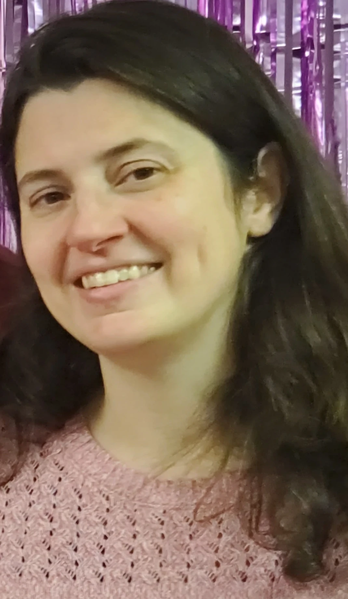

Lori Merriam | WDD 130
Hello! My Name is Lori Merriam and I am from Virginia. I like drawing, reading, and quilting. Missionaries knocked on my door and asked if I had ever heard of the Church of Jesus Christ of Latter Day Saints. At the time I did not recall meeting anyone from that church. They came back another day and asked if I would read the Book of Mormon if they gave me a copy. I was very busy and while I was curious it took them asking me at least three times before I made the time to sit down and read it. Now that I have read it, I continue to read from it often. It has been a blessing to me and my family. We find peace, hope, and renewed faith as we discuss the actions taken by the people in it. They believed in Jesus Christ and wrote of their desires that all may know the name of Jesus Christ and of his love and sacrifice for all. I invite you to do the same. You can get a free copy by asking. Click on any of the temple sites below at the top of the new page click "about us" and then "Learn more with missionaries". They would be happy to deliver a free book to you.